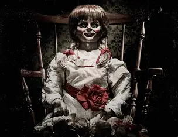
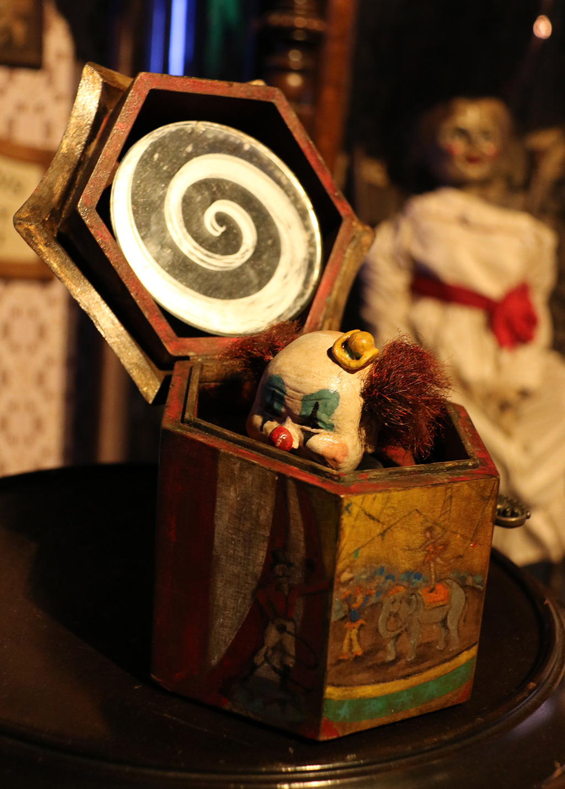
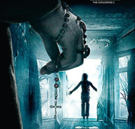

OBJETO N.01
La muñeca Annabelle
Una muñeca asociada con sucesos sobrenaturales dentro de las películas de terror.
Registro: Objeto ficticio cinematográfico
Archivos confidenciales de fenómenos paranormales
EVIDENCIAS CATALOGADAS
Algunos objetos se convierten en elementos importantes de las historias de terror.

OBJETO N.01
Una muñeca asociada con sucesos sobrenaturales dentro de las películas de terror.
Registro: Objeto ficticio cinematográfico

OBJETO N.02
Las cajas musicales antiguas son un recurso frecuente en el terror, donde se relacionan con recuerdos, misterio y escenas inquietantes.
Registro: Objeto de ambientación

OBJETO N.03
En las historias de terror sobrenatural, los crucifijos pueden representar protección y enfrentamientos relacionados con lo paranormal.
Registro: Símbolo dentro de la ficción